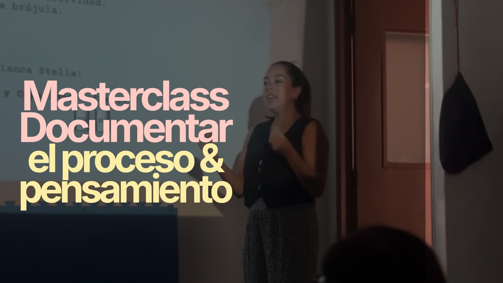
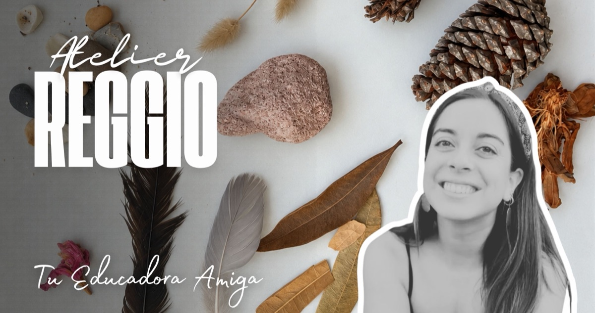
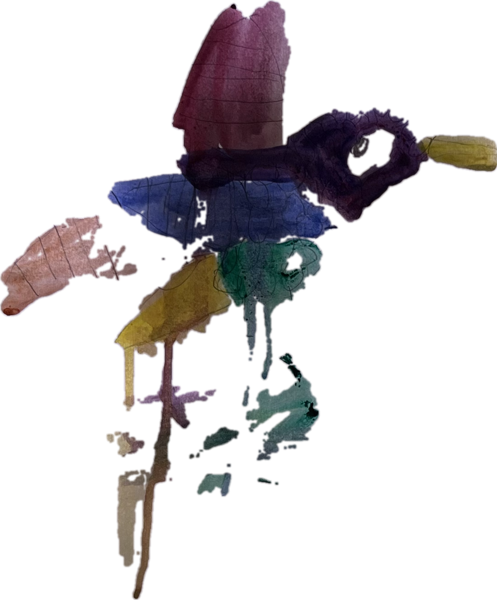
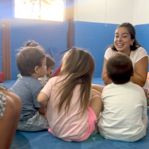
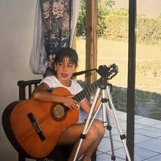
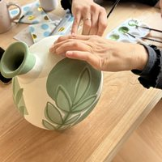
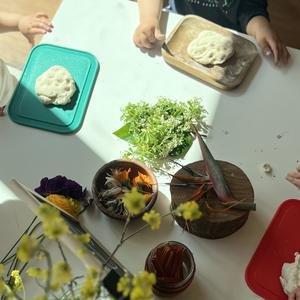
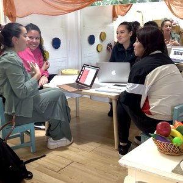

Tu Educadora Amiga
Inspiración Filosofía Reggio Emilia
Esto parece un caracol giganteGael, 5 años
Testimonios del
último encuentro

“Amo que haya ejemplos, ideas y formas concretas… esa bajadita siempre es necesaria y la agradezco mucho mucho.”
Patricia G.
“Siempre le he tenido miedo a la documentación, pero últimamente me he ido formando más y ahora hasta es mi cosa favorita. Lo has explicado de una manera simple y clara 🥰”
Miranda L.
“Muchas gracias por toda la información, ayuda a ordenar las ideas.”
Mónica F.
“¡Muy clara! Inspiras para seguir junto a la infancia.”
Nilda S.
US$12 con impuestos incluidos. Una hora y quince minutos, para verla cuando quieras.
Quiero enterarme de la próximaSuscríbete a mi carta: recibirás una reflexión sobre la infancia cada semana y serás de las primeras en saber de la próxima masterclass.

No necesitas más cosas,
solo otra mirada.
Lo difícil de la filosofía Reggio Emilia no es entenderla: es llevarla a tu sala, con tu grupo, tus tiempos y tu espacio.
Aquí la filosofía se vuelve práctica: propuestas de investigación para cualquier día de la semana.
Adentro encuentras imprimibles para explorar con tu grupo, lo que probé durante trece años en mi sala y cursos que bajan cada concepto a lo que pasa en el aula. Sin recetas, y aunque tu centro no sea Reggio.
Lo que dicen educadoras del Atelier Reggio
“No pude estar en vivo, pero me tomé esta tarde de lluvia para ver la grabación (…). Me gustó la mirada de ver el registro como una forma de decirle a las infancias: te vi y tu pensamiento importa.”
Camila C.
“Hay tantas cosas que vemos día a día en el patio que pueden sentirse tan normales y rutinarias, que no recordamos la cantidad de aprendizajes (…) que existen solo al mirar por la ventana. Gracias por darnos un espacio y tiempo de reflexión.”
Victoria A.
“Me encanta la idea de hacer visible el mundo de los niños, y sus ideas. Registrar para conocerlos en profundidad sin duda hará que los niños sean muy seguros de sí mismos.”
Yaninna C.
USD $15 al mes. Cancelas cuando quieras.

Mi carta semanalRecibe reflexiones sobre la infancia desde la filosofía Reggio Emilia,
y entérate antes que nadie de la próxima masterclass
Una carta a la semana sobre lo que reflexiono con mi equipo, sobre la infancia en general o sobre algo que vi y me llamó la atención, siempre mirado desde esa filosofía. También te cuento lo que estoy preparando y lo que viene. Sin recetas y sin tareas.
¡Listo!
Ya estás dentro. Nos leemos la próxima semana.
Quién te acompaña

Soy Dani Meniconi, educadora y atelierista. En 2018 fundé Bianca Stella Playgroup, un centro inspirado en la filosofía Reggio Emilia.


Estudié educación, y el arte me ha acompañado toda la vida: pinto, hago cerámica, diseño, fotografío, canto, bailo y cuento cuentos. Por eso amo esta filosofía: une la educación y la investigación con el arte, la escucha, la estética y los cien lenguajes de la infancia.

Confío en la infancia y le doy tiempo para descubrir el mundo a su manera. Cuido la estética de los espacios y materiales, porque la belleza asombra a los niños y niñas y los invita a explorar, probar e investigar.

Hoy acompaño a mi equipo, desde la filosofía Reggio Emilia y mi mirada artística, para que confíe en los niños y niñas y transforme su mirada. Así la infancia nos puede mostrar su propia cultura. Eso mismo es lo que comparto contigo aquí.